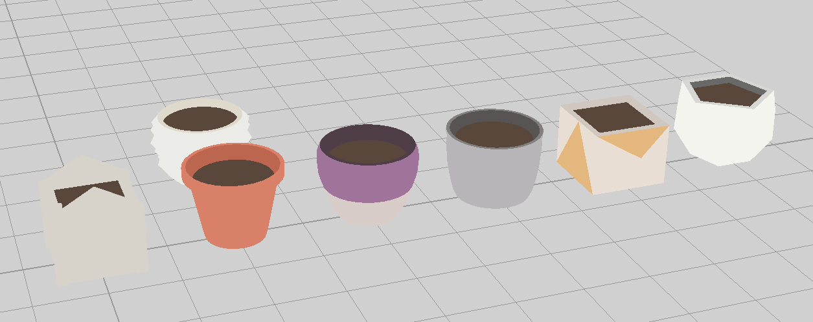
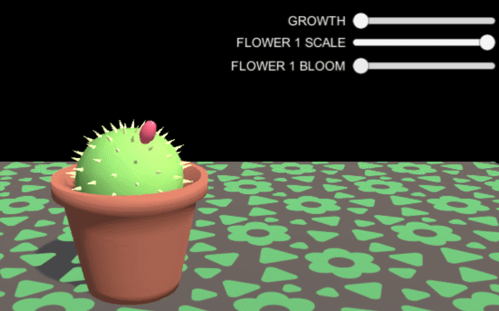

With February coming to an end, it’s time for a brief reflection on the month.
Contracts
We’re thrilled to formally announce a new collaboration partner for gARden. Please join us in welcoming Chelsea Saunders, aka PIXELATEDCROWN, aboard!
Chelsea Saunders
Chelsea is a wonderfully talented 3D artist, and as such will be helping us by producing the 3D art for gARden as a contractor. So far, she’s produced several adorable pots and plants for us, and we’re excited to even more in the futue.

Contests
Also, this weekend (March 2nd and 3rd), we will be participating in the Mass DiGI Game Challenge with gARden! This year, the contest is being held on Becker College’s campus, so If you’re in the Worcester area, come on and stop by! We’ll have a demo build running, if you want to see some virtual plants for yourself!